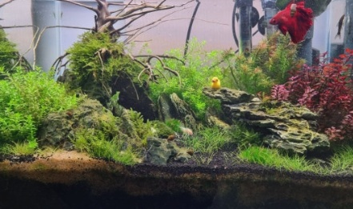
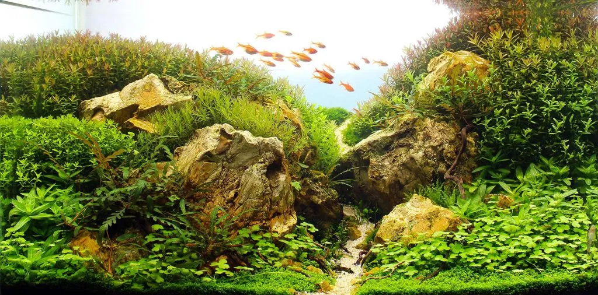

같은 핵심 요구사항, 열세 번의 시도. 브라우저만으로 도는 3D 수족관.
13 builds · 13 months · 2 prompt variants


브라우저만으로 실행 가능한 3D 디지털 수족관을 만들어주세요.
@sample.png많은 사람들이 평생을 낚시를 하면서도, 그들이 추구하는 것이 물고기가 아니라는 것을 깨닫지 못한다. 헨리 데이비드 소로우 프롬프트에 예시로 적힌 이 한 문장에서 각 버전의 명언 기능이 나왔습니다.
인터랙티브하게 감상할 수 있는 Html 파일로 만들어주세요.
열세 개가 모두 똑같은 프롬프트 한 번으로 나온 것은 아닙니다. 01 과 02 는 몇 시간에 걸쳐 고쳐가며 만들었고, 02 는 도중에 다른 모델로 갈아타기도 했습니다. 어떤 조건에서 만들어졌는지는 비교표의 제작 조건 표에 정리해두었습니다.
원문은 prompt.md 에 있습니다.
회차마다 문장을 조금씩 다듬었고, 2026년 2월 3종 비교 때는 같은 사진을
@스크린샷 2026-02-22 오전 7.59.29.png 로 첨부했습니다.
07·08 은 2026년 5월에 별도 문장과 위의 1024 × 506 사진으로 만든 비교군입니다.
문장과 이미지는 달라도 핵심 요구사항은 열세 버전 모두 같습니다.